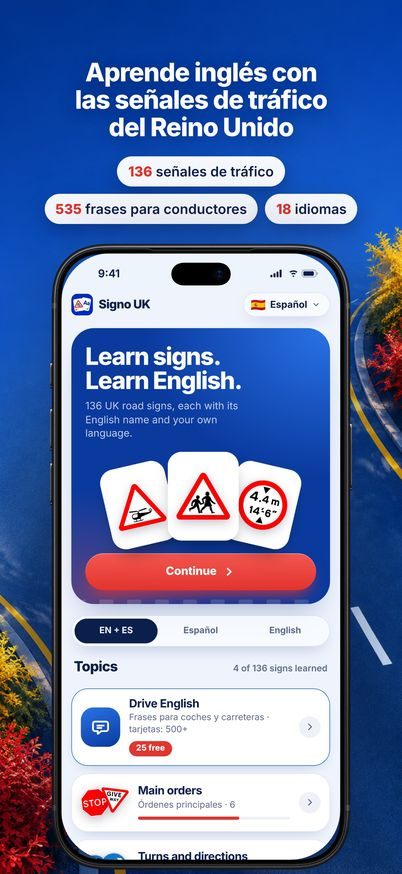
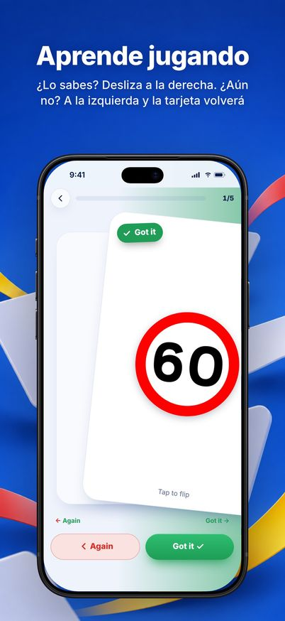
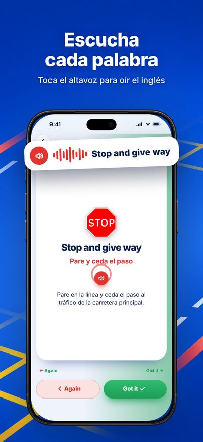
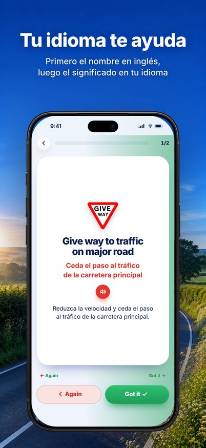
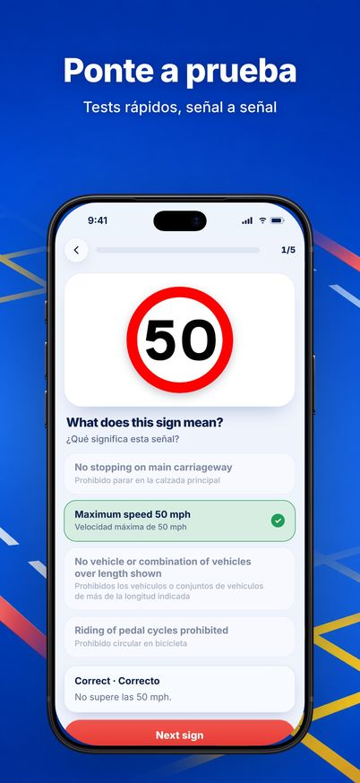
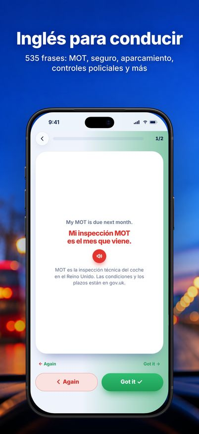
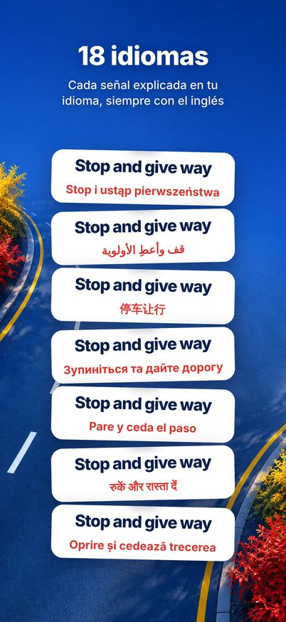
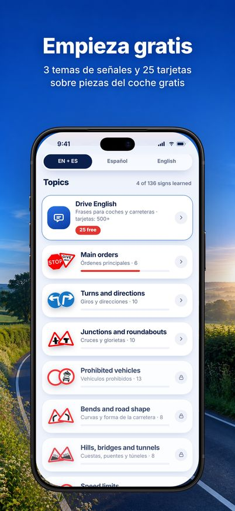
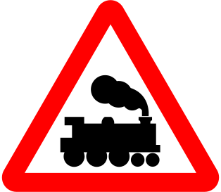

Señales de tráfico del Reino Unido, explicadas en español
Qué significa cada señal y cómo se llama en inglés. Signo es una app para iPhone con 136 señales y 535 frases para conducir en el Reino Unido, explicadas en español.
Descargar en el App StoreGratis: 3 temas de señales y 25 palabras sobre las partes del coche. Signo Pro lo desbloquea todo.


Aprende como en un juego
¿Conoces la señal? Desliza a la derecha; si no, a la izquierda y volverá. Escucha cada nombre en inglés con voz británica y haz un test rápido.








Señales frecuentes y su significado
Toca una señal para ver la explicación.
- Pare y ceda el pasoStop and give way
 Ceda el paso al tráfico de la carretera principalGive way to traffic on major road
Ceda el paso al tráfico de la carretera principalGive way to traffic on major road Prohibida la entrada de vehículosNo entry for vehicular traffic
Prohibida la entrada de vehículosNo entry for vehicular traffic Se aplica el límite de velocidad nacionalNational speed limit applies
Se aplica el límite de velocidad nacionalNational speed limit applies- Velocidad máxima de 30 mphMaximum speed 30 mph
 Velocidad máxima de 20 mphMaximum speed 20 mph
Velocidad máxima de 20 mphMaximum speed 20 mph Velocidad máxima de 40 mphMaximum speed 40 mph
Velocidad máxima de 40 mphMaximum speed 40 mph Velocidad máxima de 50 mphMaximum speed 50 mph
Velocidad máxima de 50 mphMaximum speed 50 mph Velocidad máxima de 60 mphMaximum speed 60 mph
Velocidad máxima de 60 mphMaximum speed 60 mph Entrada en una zona de 20 mphEntry to 20 mph zone
Entrada en una zona de 20 mphEntry to 20 mph zone Prohibido adelantarNo overtaking
Prohibido adelantarNo overtaking Prohibido girar a la derechaNo right turn
Prohibido girar a la derechaNo right turn Prohibido girar a la izquierdaNo left turn
Prohibido girar a la izquierdaNo left turn Prohibido dar la vuelta en UNo U-turns
Prohibido dar la vuelta en UNo U-turns Manténgase a la izquierdaKeep left
Manténgase a la izquierdaKeep left Mini glorietaMini-roundabout
Mini glorietaMini-roundabout- Glorieta más adelanteRoundabout ahead
 Prohibida la circulación de todos los vehículosAll vehicles prohibited
Prohibida la circulación de todos los vehículosAll vehicles prohibited Prohibida la circulación de vehículos de motorNo motor vehicles
Prohibida la circulación de vehículos de motorNo motor vehicles Prohibido parar en la calzada principalNo stopping on main carriageway
Prohibido parar en la calzada principalNo stopping on main carriageway Vía reservada para autobuses, bicicletas y taxisRoute for use by buses, pedal cycles and taxis only
Vía reservada para autobuses, bicicletas y taxisRoute for use by buses, pedal cycles and taxis only Entrada a una zona de estacionamiento controladoEntrance to controlled parking zone
Entrada a una zona de estacionamiento controladoEntrance to controlled parking zone Solo para titulares de permisoPermit holders only
Solo para titulares de permisoPermit holders only Solo para titulares de tarjeta de discapacidadDisabled badge holders only
Solo para titulares de tarjeta de discapacidadDisabled badge holders only Zona de estacionamientoParking place
Zona de estacionamientoParking place Radares de velocidadSpeed cameras
Radares de velocidadSpeed cameras Alto - PolicíaStop - Police
Alto - PolicíaStop - Police Punto a partir del cual se aplican las normas de autopistaPoint at which motorway regulations start to apply
Punto a partir del cual se aplican las normas de autopistaPoint at which motorway regulations start to apply Semáforos más adelanteTraffic signals ahead
Semáforos más adelanteTraffic signals ahead Paso de peatones (cebra)Zebra crossing
Paso de peatones (cebra)Zebra crossing Niños yendo a la escuela o al parque infantil, o saliendo de ellos, más adelanteChildren going to or from school or playground ahead
Niños yendo a la escuela o al parque infantil, o saliendo de ellos, más adelanteChildren going to or from school or playground ahead Obras en la carreteraRoad works
Obras en la carreteraRoad works Carretera resbaladizaSlippery road
Carretera resbaladizaSlippery road Paso a nivel con barrera más adelanteLevel crossing with gate or barrier ahead
Paso a nivel con barrera más adelanteLevel crossing with gate or barrier ahead
Paso a nivel ferroviario sin barrera más adelanteRailway level crossing without gate or barrier ahead Ceda el paso a los vehículos que vienen en sentido contrarioGive priority to vehicles from opposite direction
Ceda el paso a los vehículos que vienen en sentido contrarioGive priority to vehicles from opposite direction Prioridad sobre los vehículos que vienen en sentido contrarioTraffic has priority over oncoming vehicles
Prioridad sobre los vehículos que vienen en sentido contrarioTraffic has priority over oncoming vehicles Prohibidos los vehículos de más de la altura indicadaNo vehicles over height shown
Prohibidos los vehículos de más de la altura indicadaNo vehicles over height shown Intersección en T más adelanteT-junction ahead
Intersección en T más adelanteT-junction ahead Cruce más adelanteCrossroads ahead
Cruce más adelanteCrossroads ahead Carretera de un solo carrilSingle track road
Carretera de un solo carrilSingle track road ApartaderoPassing place
ApartaderoPassing place
Las partes del coche en inglés
25 palabras del capítulo gratuito Drive English. Toca una palabra para escucharla.
Las 136 señales están en la app
Gratis: 3 temas de señales y 25 palabras sobre las partes del coche. Signo Pro lo desbloquea todo.